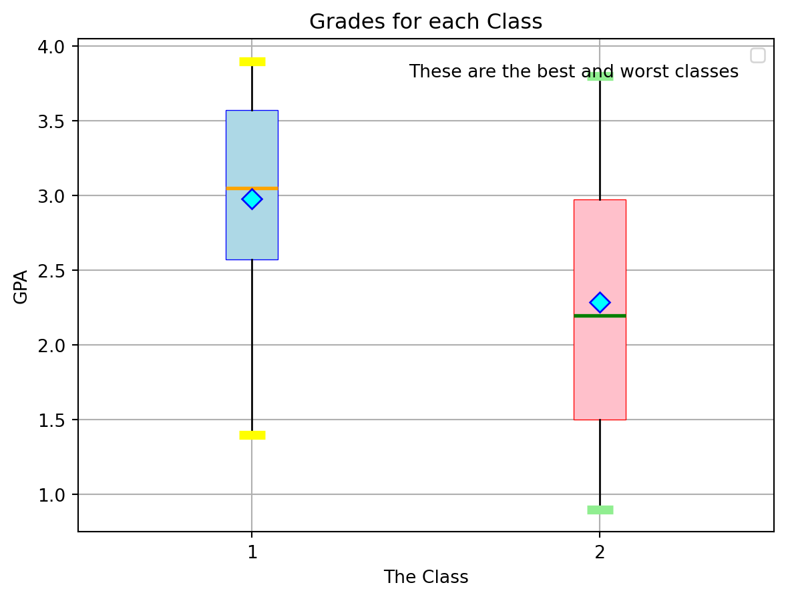

import pandas as pd
import matplotlib.pyplot as pltAn Introduction to Visualizations in Python
Introduction
Data is more useful when we can see it. In this post, you will learn how to use the pandas and matplotlib libraries in Python to create simple, clear visualizations from a small dataset. Specifically, you will learn how to create a dataset in pandas, and then use matplotlib to plot for one or multiple datasets for a single feature.
(A future blog post will cover downloading a dataset into pandas, and plotting for the relationship between two or more features.)
Learning Pandas
Creating a dataset
In order to visualize data, we first need to obtain some. We will use pandas to create a small dataset.
First, we begin by importing our required libraries, in this case, pandas and matplotlib.
Now, we will decide how many features we want our dataset to have. These will become our columns.
For this example, our dataset with have 4 features: name, gpa, major, and year
Next we decide how many entries we want in our dataset. For this example, we will do only 10.
Now, to do this in code, we first create 4 lists of 10 items.
name = ["Alice", "Bob", "Charlie", "Diana", "Ethan", "Fiona", "George", "Hannah", "Isaac", "Julia"]
gpa = [3.5, 2.8, 3.9, 3.2, 2.5, 1.4, 2.9, 3.8, 2.2, 3.6]
major = ["Math", "Computer Science", "Statistics", "Math", "Computer Science", "Statistics", "Math", "Computer Science", "Statistics", "Math"]
year = ["Freshman", "Sophomore", "Junior", "Senior", "Freshman", "Sophomore", "Junior", "Senior", "Freshman", "Sophomore"]Now that we have created our features, we put them into a pandas dataset.
data = {
"name": name,
"gpa": gpa,
"major": major,
"year": year
}
df = pd.DataFrame(data)Inspecting a dataset
Now we can begin looking at our data. Before we start graphing, we can look at a small portion of our data, using the .head() function, or the entire set.
df.head()| name | gpa | major | year | |
|---|---|---|---|---|
| 0 | Alice | 3.5 | Math | Freshman |
| 1 | Bob | 2.8 | Computer Science | Sophomore |
| 2 | Charlie | 3.9 | Statistics | Junior |
| 3 | Diana | 3.2 | Math | Senior |
| 4 | Ethan | 2.5 | Computer Science | Freshman |
print(df) name gpa major year
0 Alice 3.5 Math Freshman
1 Bob 2.8 Computer Science Sophomore
2 Charlie 3.9 Statistics Junior
3 Diana 3.2 Math Senior
4 Ethan 2.5 Computer Science Freshman
5 Fiona 1.4 Statistics Sophomore
6 George 2.9 Math Junior
7 Hannah 3.8 Computer Science Senior
8 Isaac 2.2 Statistics Freshman
9 Julia 3.6 Math SophomoreAdditionally, we can look only at specific columns or features of our graph by simply indexing by column name.
df["gpa"]0 3.5
1 2.8
2 3.9
3 3.2
4 2.5
5 1.4
6 2.9
7 3.8
8 2.2
9 3.6
Name: gpa, dtype: float64This works well for one column, but what if we want to access more?
We can also look at multiple columns at the same time by using the loc function. This function finds rows or columns by their label.
Within the brackets you have the row followed by a comma, followed by the column. If you are familiar with Python slicing, then you know that : is used to obtain an entire section, in our case, a row or a column.
This allows us to look at multiple columns at once.
df.loc[:, ["name", "gpa"]]| name | gpa | |
|---|---|---|
| 0 | Alice | 3.5 |
| 1 | Bob | 2.8 |
| 2 | Charlie | 3.9 |
| 3 | Diana | 3.2 |
| 4 | Ethan | 2.5 |
| 5 | Fiona | 1.4 |
| 6 | George | 2.9 |
| 7 | Hannah | 3.8 |
| 8 | Isaac | 2.2 |
| 9 | Julia | 3.6 |
We can also look at individual rows in a dataframe. We do this by using the iloc function. This function stands for integer location. It is used by inputting the index of the row you would like to use.
df.iloc[0]name Alice
gpa 3.5
major Math
year Freshman
Name: 0, dtype: objectFinally we can access a row by checking if it fulfills a certain condition, such as one of the columns holding a specific value, and then using .loc.
df.loc[df["name"] == "Alice"]| name | gpa | major | year | |
|---|---|---|---|---|
| 0 | Alice | 3.5 | Math | Freshman |
This actually returns a pandas Series instead of pandas DataFrame, but the specifics of Pandas are not important for this tutorial, so we will ignore this.
With this basic pandas knowledge at our disposal, we can now begin learning how to visualize our data.
Distribution Graphs (1 Feature)
First we will show how you can plot a single feature with various distribution graphs.
Histogram
The first one we will be showing is a histogram, in which we will look at the distribution of gpa.
This will be achieved by using plt.hist(), which will create histogram of our data for us. To get it to plot only the gpa’s we will call all the information from the gpa column.
One part of using matplotlib, is that you should always use the .show() function after creating a graph. If you don’t you get a bunch of return text that you don’t want to see when you creating your graph. Allow me to show you the difference.
plt.hist(df["gpa"])(array([1., 0., 0., 1., 1., 1., 1., 1., 2., 2.]),
array([1.4 , 1.65, 1.9 , 2.15, 2.4 , 2.65, 2.9 , 3.15, 3.4 , 3.65, 3.9 ]),
<BarContainer object of 10 artists>)
plt.hist(df["gpa"])
plt.show()
Now, you may notice that the graph above, even without the extra text above it, doesn’t look very nice. It ranges from 1.4 to 3.9. This is because we haven’t specified the optional bin and range parameter. If bin isn’t specified then matplotlib automatically create 10 evenly spaced bins. If range isn’t specified, then it uses the natural min and max of your data.
However, we know that gpas can range from 0.0 to 4.0, thus we can adjust.
plt.hist(df["gpa"], range = (0.0, 4.0))
plt.show()
Now, our data is more accurately represented. Since we have the range down, lets see what it looks like with different amounts of bins
plt.hist(df["gpa"], range = (0.0, 4.0), bins = 4)
plt.show()
plt.hist(df["gpa"], range = (0.0, 4.0), bins = 8)
plt.show()
These are not the only options for histograms. What if we want to make the bars go horizontal instead of vertical? That can be done by specifying the orientation parameter to be horizontal. (By default it is vertical)
plt.hist(df["gpa"], range = (0.0, 4.0), bins = 8, orientation = "horizontal")
plt.show()
Currently, the y-axis shows the count for how many values fall into each bin. We can change this to show what percentage of the data falls within each bin by specifying the density parameter.
plt.hist(df["gpa"], range = (0.0, 4.0), bins = 8, density = True)
plt.show()
At first glance, this looks like it doesn’t show the probabilities correctly. After all, .2+.2+.6+.2+.8 ! = 1, in fact, it equals 2. This is because You need to factor in, not only the height of the bins, but the width as well. Since each bin is 0.5 units long, when we multiply each bin’s height by 0.5, and then add them together, we get 1.
Each bin’s area is what specifies the percentage of data within that bin. We can double check this ourselves. For example, by our math, 40% of our students should have gpas in the range of 3.5-4.0.
df["gpa"]0 3.5
1 2.8
2 3.9
3 3.2
4 2.5
5 1.4
6 2.9
7 3.8
8 2.2
9 3.6
Name: gpa, dtype: float64Upon looking, we can confirm that there are four students in this range, with grades of 3.5, 3.6, 3.8, and 3.9.
Now that the data is shown and organized correctly in the graph, we can make it look exactly how we want.
The next parameter we are going to look at is histtype, which specifies which type of bars you want for your histogram. There are four options, bar, (which is the default one we`ve been using), step, stepfilled, and barstacked. We will look at each.
plt.hist(df["gpa"], range = (0.0, 4.0), bins = 8, histtype = "step")
plt.show()
plt.hist(df["gpa"], range = (0.0, 4.0), bins = 8, histtype = "stepfilled")
plt.show()
Now, at first glance it looks like it is no different from the normal bars histtype. The difference becomes more noticeable once we color in the edge lines, which by default are not shown.
plt.hist(df["gpa"], range = (0.0, 4.0), bins = 8, histtype = "bar", edgecolor = "black")
plt.show()
plt.hist(df["gpa"], range = (0.0, 4.0), bins = 8, histtype = "stepfilled", edgecolor = "black")
plt.show()
Now, the barstacked parameter is different, as it stacks bars from multiple datasets on top of each other. Seeing as we are only using one dataset, in order to accurately show the execution of this parameter, we need to create some more data. Since we only care about a single feature, gpa, we will make it a simple pandas series.
more_data = pd.Series([2.3, 3.8, 1.4, 2.9, 3.5, 1.8, 2.1, 3.0, 1.2, 0.9])Now we can properly call histtype with barstacked.
plt.hist([df["gpa"], more_data], range = (0.0, 4.0), bins = 8, histtype = "barstacked")
plt.show()
Now, what if we don’t want our bars to be touching, what if we want some space? Then we can change the rwidth parameter. Naturally it defaults to 1, which makes the bars touch, by reducing that number we can can increase the space in between the bars.
plt.hist(df["gpa"], range = (0.0, 4.0), bins = 8, histtype = "bar", rwidth = 0.9)
plt.show()
plt.hist(df["gpa"], range = (0.0, 4.0), bins = 8, histtype = "bar", rwidth = 0.5)
plt.show()
With these resized bars, they might not look as good being in the middle of their section, this is why we can move them around using the align parameter. By default, it is set to mid, however, we can specify to align left or right.
plt.hist(df["gpa"], range = (0.0, 4.0), bins = 8, histtype = "bar", rwidth = 0.5, align = "left")
plt.show()
plt.hist(df["gpa"], range = (0.0, 4.0), bins = 8, histtype = "bar", rwidth = 0.5, align = "right")
plt.show()
Now that we have our data where we want it to be, we can choose what color to portray it in. Sometimes blue isn’t always the right choice. We can specify this color by using the color parameter.
plt.hist(df["gpa"], range = (0.0, 4.0), bins = 8, histtype = "bar", rwidth = 0.9, color = "green")
plt.show()
What if we have a scenario with multiple datasets, and want to specify colors for each? Then we simply puts the colors in a list that is in the same order as the list of datasets we pass in.
plt.hist([df["gpa"], more_data], range = (0.0, 4.0), bins = 8, histtype = "barstacked", color = ["purple", "pink"])
plt.show()
However, it is not very obvious which dataset belongs to which bars. To clarify this, we can use the label parameter. We can do this similarly to how we did colors, by inputting a list that corresponds to the inputted datasets.
This parameter is a bit more complicated than all of our other parameters though, as it requires more than just manipulating the hist function itself. In addition, we have to call the legend function from matplotlib itself. This is followed by the show function, to ensure the legend appears on our graph with our labels.
plt.hist([df["gpa"], more_data], range = (0.0, 4.0), bins = 8, histtype = "barstacked", color = ["purple", "pink"], label = ["Morning Class", "Evening Class"])
plt.legend()
plt.show()
This wraps up the most important details to know about histograms. Next we will move on to some of matplotlib’s universal functions.
Universal Matplotlib Functions
Before we continue to the next graph, there are some functions not directly tied to any graph that we should know. These are matplotlib functions that are universal to all graphs.
First there are the plot labels, these are specific to certain axes. In our case, .xlabel() and .ylabel(). You simply fill these in with a string of your choice. They should the unit of measurement for each of your axes.
plt.hist(df["gpa"], range = (0.0, 4.0), bins = 8)
plt.xlabel("GPA")
plt.ylabel("Count")
plt.show()
Additionally, we can set a title for the graph overall by using the .title() function and inputting a string for our title.
plt.hist(df["gpa"], range = (0.0, 4.0), bins = 8)
plt.title("Grades")
plt.show()
If we want to we could also add grid lines by setting plt.grid() to True. (This isn’t the most useful for a small histogram like this, but I`m sure you could see how this would be useful on something like a scatter plot)
plt.hist(df["gpa"], range = (0.0, 4.0), bins = 8)
plt.grid(True)
plt.show()
Finally, we can add in a bit of text to our graph using plt.text(). We can use this to explain context or any other information needed to understand our graph.
Instead of simply taking in a string, boolean, or simply being called empty, we need to specify where our text is going in the graph. The parameters for this function are .text(x-coordinate, y-coordinate, string of text).
This can be done in two ways. First, with a fixed position by setting the x and y coordinate manually, like so.
plt.hist(df["gpa"], range = (0.0, 4.0), bins = 8)
plt.text(.1, 4, "These are the best and worst classes")
plt.show()
However, this isn’t the most convenient way, and could result in lots of trial and error before finding the right location, especially if you want it somewhere simple. For example, lets say that you want it in the top right corner of the graph.
Then, instead of specifying x and y as direct values, we can specify them as coordinates relative to their axis. For example, 1 would be the max, and 0 would be the minimum. However, for this to work, we must tell matplotlib that we are changing x and y from units to relative units. This is done with the transform parameter, specifically by making it equal plt.gca().transAxes.
To translate that code to english. gca stands for “get current axes,” and .transAxes tells it to transform into relative axis units.
Putting this together allows us to do this.
plt.hist(df["gpa"], range = (0.0, 4.0), bins = 8)
plt.text(1.0, 1.0, "This is the best class", transform = plt.gca().transAxes
)
plt.show()
However, you may notice that it isn’t staying in the corner, it is actually going outside the graph. to keep our text inside our graph we need to specify a few more variables. This being, va and ha. (va is vertical alignment, while ha is horizontal alignment.)
These parameters are specified simply with a string corresponding to the location of where we want our text. The options for these are, va: bottom, center, top, ha: left, center, and right
(va actually also has baseline and center_baseline, but those aren’t as useful, so you don’t need to worry about remembering them as much.)
plt.hist(df["gpa"], range = (0.0, 4.0), bins = 8)
plt.text(1.0, 1.0, "This is the best class", ha = "right", va = "top", transform = plt.gca().transAxes)
plt.show()
However, even this doesn’t look quite right. It is too squished. We can fix this by offsetting a little bit from being exactly in the corner.
plt.hist(df["gpa"], range = (0.0, 4.0), bins = 8)
plt.text(0.95, 0.95, "This is the best class", ha = "right", va = "top", transform = plt.gca().transAxes)
plt.show()
Putting everything we have learned together we can get a graph that looks like this.
plt.hist([df["gpa"], more_data], range = (0.0, 4.0), bins = 8, rwidth = 0.9, histtype = "barstacked", color = ["purple", "pink"], label = ["Morning Class", "Evening Class"])
plt.legend()
plt.xlabel("GPA")
plt.ylabel("Count")
plt.title("Grades")
plt.text(0.95, 0.95, "These are the best and worst classes", ha = "right", va = "top", transform = plt.gca().transAxes)
plt.grid(True)
plt.show()
This isn’t necessarily the nicest looking graph, but it does show you what all our options put together look like, and when you make your graphs, you can pick and choose for what matters most to telling the story of your data.
Now, there is one final universal function left to cover, which is plt.subplots(). This function allows you to put multiple smaller graphs into one large picture.
First, .subplots() requires the amount of total plots you want in your picture. You tell it this by inputting the number of rows and the number of columns which equal your total number of graphs. For this example we will do 2 rows with 3 columns, for a total of 6 graphs.
fig, axes = plt.subplots(2, 3)
This returns a figure for us to fill in and the axes of the total picture.
For this example, we will take our bar graph, and simply show off different colors, but just know you can have various and different graphs for each slot. (For example, you could have 3 bar graphs, 2 whisker plots and a scatterplot all put together.)
We can then begin filling them in with our graphs by specifying where in the overall picture they go. We do this by specifying the two axes correlating to their position.
(Please note that you must do plt.subplots() and name the axes in the same section of code as filling out the axes for it to work.)
fig, axes = plt.subplots(2, 3)
axes[0, 0].hist(df["gpa"], range = (0.0, 4.0), bins = 8, color = "lightblue")
axes[0, 1].hist(df["gpa"], range = (0.0, 4.0), bins = 8, color = "yellow")
axes[0, 2].hist(df["gpa"], range = (0.0, 4.0), bins = 8, color = "teal")
axes[1, 0].hist(df["gpa"], range = (0.0, 4.0), bins = 8, color = "magenta")
axes[1, 1].hist(df["gpa"], range = (0.0, 4.0), bins = 8, color = "cyan")
axes[1, 2].hist(df["gpa"], range = (0.0, 4.0), bins = 8, color = "brown")
plt.show()
Now that the graphs are plotted, we should make sure that people actually understand what they are looking at. We can do this by adding a title to each boxplot by specifying a title for that axis. Additionally, we can add an overall title that covers all our graphs by using the plt.suptitle().
We will also use the .tight_layout() function to ensure that our plots don’t accidentally overlap with each other, and generally make our graphs look neater next to each other.
fig, axes = plt.subplots(2, 3)
axes[0, 0].hist(df["gpa"], range = (0.0, 4.0), bins = 8, color = "blue")
axes[0, 0].set_title("Class Blue")
axes[0, 1].hist(df["gpa"], range = (0.0, 4.0), bins = 8, color = "yellow")
axes[0, 1].set_title("Class Yellow")
axes[0, 2].hist(df["gpa"], range = (0.0, 4.0), bins = 8, color = "teal")
axes[0, 2].set_title("Class Teal")
axes[1, 0].hist(df["gpa"], range = (0.0, 4.0), bins = 8, color = "magenta")
axes[1, 0].set_title("Class Magenta")
axes[1, 1].hist(df["gpa"], range = (0.0, 4.0), bins = 8, color = "cyan")
axes[1, 1].set_title("Class Cyan")
axes[1, 2].hist(df["gpa"], range = (0.0, 4.0), bins = 8, color = "brown")
axes[1, 2].set_title("Class Brown")
plt.suptitle("Some graph colors")
plt.tight_layout()
plt.show()
Finally, we can add one more parameter to .subplots(). This parameter is called figsize, and controls how large the overall graphs appears. Here is are a few examples of our previous subplot graph in various sizes, ((12, 8), (10, 6), (8, 4)). You may need to experiment to find a size that perfectly fits your graphs.
fig, axes = plt.subplots(2, 3, figsize = (12, 8))
axes[0, 0].hist(df["gpa"], range = (0.0, 4.0), bins = 8, color = "blue")
axes[0, 0].set_title("Class Blue")
axes[0, 1].hist(df["gpa"], range = (0.0, 4.0), bins = 8, color = "yellow")
axes[0, 1].set_title("Class Yellow")
axes[0, 2].hist(df["gpa"], range = (0.0, 4.0), bins = 8, color = "teal")
axes[0, 2].set_title("Class Teal")
axes[1, 0].hist(df["gpa"], range = (0.0, 4.0), bins = 8, color = "magenta")
axes[1, 0].set_title("Class Magenta")
axes[1, 1].hist(df["gpa"], range = (0.0, 4.0), bins = 8, color = "cyan")
axes[1, 1].set_title("Class Cyan")
axes[1, 2].hist(df["gpa"], range = (0.0, 4.0), bins = 8, color = "brown")
axes[1, 2].set_title("Class Brown")
plt.suptitle("Some graph colors")
plt.tight_layout()
plt.show()
fig, axes = plt.subplots(2, 3, figsize = (10, 6))
axes[0, 0].hist(df["gpa"], range = (0.0, 4.0), bins = 8, color = "blue")
axes[0, 0].set_title("Class Blue")
axes[0, 1].hist(df["gpa"], range = (0.0, 4.0), bins = 8, color = "yellow")
axes[0, 1].set_title("Class Yellow")
axes[0, 2].hist(df["gpa"], range = (0.0, 4.0), bins = 8, color = "teal")
axes[0, 2].set_title("Class Teal")
axes[1, 0].hist(df["gpa"], range = (0.0, 4.0), bins = 8, color = "magenta")
axes[1, 0].set_title("Class Magenta")
axes[1, 1].hist(df["gpa"], range = (0.0, 4.0), bins = 8, color = "cyan")
axes[1, 1].set_title("Class Cyan")
axes[1, 2].hist(df["gpa"], range = (0.0, 4.0), bins = 8, color = "brown")
axes[1, 2].set_title("Class Brown")
plt.suptitle("Some graph colors")
plt.tight_layout()
plt.show()
fig, axes = plt.subplots(2, 3, figsize = (8, 4))
axes[0, 0].hist(df["gpa"], range = (0.0, 4.0), bins = 8, color = "blue")
axes[0, 0].set_title("Class Blue")
axes[0, 1].hist(df["gpa"], range = (0.0, 4.0), bins = 8, color = "yellow")
axes[0, 1].set_title("Class Yellow")
axes[0, 2].hist(df["gpa"], range = (0.0, 4.0), bins = 8, color = "teal")
axes[0, 2].set_title("Class Teal")
axes[1, 0].hist(df["gpa"], range = (0.0, 4.0), bins = 8, color = "magenta")
axes[1, 0].set_title("Class Magenta")
axes[1, 1].hist(df["gpa"], range = (0.0, 4.0), bins = 8, color = "cyan")
axes[1, 1].set_title("Class Cyan")
axes[1, 2].hist(df["gpa"], range = (0.0, 4.0), bins = 8, color = "brown")
axes[1, 2].set_title("Class Brown")
plt.suptitle("Some graph colors")
plt.tight_layout()
plt.show()


This covers the most important universal functions in matplotlib. Next, we will move on to boxplots.
Boxplot
First of all, to create a boxplot, we simply use .boxplot(). Just like with bar graphs, we can choose to show data from one set of data, or from multiple.
plt.boxplot(df["gpa"])
plt.show()
plt.boxplot([df["gpa"], more_data])
plt.show()
Once we have multiple sets of data, we can also add a label to differentiate them, just like with our histograms.
plt.boxplot([df["gpa"], more_data], labels = ["Class A", "Class B"])
plt.legend()
plt.show()C:\Users\cnels\AppData\Local\Temp\ipykernel_28352\2780255427.py:1: MatplotlibDeprecationWarning: The 'labels' parameter of boxplot() has been renamed 'tick_labels' since Matplotlib 3.9; support for the old name will be dropped in 3.11.
plt.boxplot([df["gpa"], more_data], labels = ["Class A", "Class B"])
C:\Users\cnels\AppData\Local\Temp\ipykernel_28352\2780255427.py:2: UserWarning: No artists with labels found to put in legend. Note that artists whose label start with an underscore are ignored when legend() is called with no argument.
plt.legend()
Now, these boxplots show a lot of information, but what they don’t show is where the mean is relatively in all this data. We can change this by using the showmeans parameter. By setting it to true
plt.boxplot(df["gpa"], showmeans = True)
plt.show()
But what if we want this mean to shown as a line instead of a point? We can manipulate that as well by using the meanline parameter, and setting it to True.
plt.boxplot(df["gpa"], showmeans = True, meanline = True)
plt.show()
Once, again, like with the histograms, we can change whether we want to view these vertically or horizontally.
plt.boxplot(df["gpa"], vert = False)
plt.show()
Now we can really begin manipulating how our graph looks by using the boxprops, whiskerprops, capprops, flierprops, mediansprops, meanprops, and patch_artist parameters. Something to note about all these parameters is that they are dictionaries that have multiple parameters within. For most of these those parameters are color, linewidth, and linestyle, but I will show the specifics as we move along.
First, boxprops. This parameter controls the features relating to the main rectangle than encases Q1 through Q3. It contains linewidth and linestyle from earlier, alongside edgecolor and facecolor. These control the color of the lines around the rectangle and the color of the rectangle respectively.
However, facecolor and linestyle are mutually exclusive parameters. This is because facecolor will only work if a second parameter, patch_artist, is set to true. When patch_artist is false, then the boxplots are empty of any color, and you can specify linestyle as you desire.
(Also, it’s important to note that if you decide you only want to color the lines and choose not fill in the plot, then you would simply call the parameter color instead of edgecolor, since now there is nothing to differentiate.)
These color parameters can be changed the exact same way as the color parameter was changed with the histograms. linewidth is 1 by default, and we can set it to any float to make it thinner or thicker.
To break up all this text, here is a graph showing you the code to create a boxplot that is filled in with some blue color.
plt.boxplot(df["gpa"], patch_artist = True, boxprops = dict(facecolor = "lightblue", edgecolor = "blue", linewidth = 2))
plt.show()
Finally, linestyle gives you several options to choose from for the design of your line.
- “-” → solid
- “–” → dashed
- “-.” → dash-dot
- “:” → dotted
- “None” or “” → no line
Here is an example of every kind of line style. Since there are 5 styles, I will show them with a subplot of 1 row and 5 lines.
(patch_artist is False by default, so we can simply delete rather than manually setting it to False.)
fig, axes = plt.subplots(1, 5)
axes[0].boxplot(df["gpa"], boxprops = dict(color = "red", linewidth = 4, linestyle = "-"))
axes[0].set_title("Solid Line")
axes[1].boxplot(df["gpa"], boxprops = dict(color = "red", linewidth = 4, linestyle = "--"))
axes[1].set_title("Dashed Line")
axes[2].boxplot(df["gpa"], boxprops = dict(color = "red", linewidth = 4, linestyle = "-."))
axes[2].set_title("Dash-Dot Line")
axes[3].boxplot(df["gpa"], boxprops = dict(color = "red", linewidth = 4, linestyle = ":"))
axes[3].set_title("Dotted Line")
axes[4].boxplot(df["gpa"], boxprops = dict(color = "red", linewidth = 4, linestyle = ""))
axes[4].set_title("No Line")
plt.suptitle("Line Styles")
plt.tight_layout()
plt.show()
Next, we will move on to the whiskerprops parameters for the whisker properties. This parameter has the usual subparameters of color, linestyle, and linewidth, each of which have already been previously explained
plt.boxplot(df["gpa"], whiskerprops = dict(color = "green", linestyle = ":", linewidth = 1))
plt.show()
Next, we will move on to capprops. This parameter controls the caps on the end of each whisker. Once again, it has the usual subparameters of color, linestyle, and linewidth.
plt.boxplot(df["gpa"], capprops = dict(color = "orange", linestyle = "-", linewidth = 3))
plt.show()
Next on the list is flierprops. This controls what the outliers on your graph look like. Unlike the other parameters, this one has the unique subparameters of marker, markerfacecolor, markeredgecolor, and markersize.
Firstly, marker specifies the shape of the marker. The options for this are:
ocirclessquareDdiamond^triangle upvtriangle down<triangle left>triangle rightxX+plus*starppentagonhhexagon.point (very small)
markerfacecolor and markeredgecolor are the fill color and edge color of the marker respectively. They are simply specified by a string as with previous color parameters.
Finally markersize is an int corresponding to the size you wish the outlier to be.
Putting it all together creates a graph like this.
plt.boxplot(df["gpa"], flierprops = dict(marker = "*", markerfacecolor = "pink", markeredgecolor = "red", markersize = 3))
plt.show()
Next is medianprops. This parameter controls the look of the median line in the graph. It has the usual subparameters of color, linestyle, and linewidth.
plt.boxplot(df["gpa"], medianprops = dict(color = "lightgreen", linestyle = "-.", linewidth = .75))
plt.show()
Finally we end with the parameter meanprops. This controls the look of the mean marker/line, (if it was added). It is similar to flierprops and has the same parameters of marker, markerfacecolor, markeredgecolor, and markersize. These are used exactly as before.
I will demonstrate how it looks with both a marker and a line.
plt.boxplot(df["gpa"], showmeans = True, meanprops = dict(marker = "D", markerfacecolor = "yellow", markeredgecolor = "cyan", markersize = 6))
plt.show()
plt.boxplot(df["gpa"], showmeans = True, meanline = True, meanprops = dict(marker = "X", markerfacecolor = "magenta", markeredgecolor = "skyblue", markersize = 10))
plt.show()
As you can see, when you turn the mean into a line, when you specify meanprops, it applies these properties to two markers that it creates on either end of the line.
Finally, lets try applying these to two datasets in one boxplot. If you try modifying both boxplots in one line, you will find that it doesn’t work. This is a time where we need to actually create two separate boxplots and then put them on the same graph. We will make sure they don’t land on top of each other by using the actual final parameter for this section, position.
You can specify the position of a certain plot with an integer, so long as no position is the same for two graphs, they will line up neatly and not on top of each other.
plt.boxplot(df["gpa"], showmeans = True, meanline = False, meanprops = dict(marker = "D", markerfacecolor = "cyan", markeredgecolor = "blue", markersize = 8), patch_artist = True, boxprops = dict(facecolor = "lightblue", edgecolor = "blue", linewidth = .5), medianprops = dict(color = "orange", linestyle = "-", linewidth = 2), flierprops = dict(marker = "s", markerfacecolor = "lightblue", markeredgecolor = "blue", markersize = 6), capprops = dict(color = "yellow", linestyle = "--", linewidth = 5), positions = [1])
plt.boxplot(more_data, showmeans = True, meanline = False, meanprops = dict(marker = "D", markerfacecolor = "cyan", markeredgecolor = "blue", markersize = 8), patch_artist = True, boxprops = dict(facecolor = "pink", edgecolor = "red", linewidth = .5), medianprops = dict(color = "green", linestyle = "-", linewidth = 2), flierprops = dict(marker = "s", markerfacecolor = "pink", markeredgecolor = "red", markersize = 6), capprops = dict(color = "lightgreen", linestyle = "--", linewidth = 5), positions = [2])
plt.show()
Now that we have seen all the options for changing the visuals of a single boxplot, lets add it all together in one boxplot and see what it looks like.
(We will also be including some of our universal matplotlib functions.)
plt.boxplot(df["gpa"], showmeans = True, meanline = False, meanprops = dict(marker = "D", markerfacecolor = "cyan", markeredgecolor = "blue", markersize = 8), patch_artist = True, boxprops = dict(facecolor = "lightblue", edgecolor = "blue", linewidth = .5), medianprops = dict(color = "orange", linestyle = "-", linewidth = 2), flierprops = dict(marker = "s", markerfacecolor = "lightblue", markeredgecolor = "blue", markersize = 6), capprops = dict(color = "yellow", linestyle = "--", linewidth = 5), positions = [1])
plt.boxplot(more_data, showmeans = True, meanline = False, meanprops = dict(marker = "D", markerfacecolor = "cyan", markeredgecolor = "blue", markersize = 8), patch_artist = True, boxprops = dict(facecolor = "pink", edgecolor = "red", linewidth = .5), medianprops = dict(color = "green", linestyle = "-", linewidth = 2), flierprops = dict(marker = "s", markerfacecolor = "pink", markeredgecolor = "red", markersize = 6), capprops = dict(color = "lightgreen", linestyle = "--", linewidth = 5), positions = [2])
plt.legend()
plt.xlabel("The Class")
plt.ylabel("GPA")
plt.title("Grades for each Class")
plt.text(0.95, 0.95, "These are the best and worst classes", ha = "right", va = "top", transform = plt.gca().transAxes)
plt.grid(True)
plt.show()C:\Users\cnels\AppData\Local\Temp\ipykernel_28352\3257490930.py:5: UserWarning: No artists with labels found to put in legend. Note that artists whose label start with an underscore are ignored when legend() is called with no argument.
plt.legend()
This covers the all the basics that you should need for creating boxplots. Next, we work with density graphs.
Density
Conclusion
Over the course of this tutorial you have learned how to create a histogram, boxplot, and density plot with as much or as little detail as desired.
However, how do you actually use these plots? When do you specifically use them? It depends on what you are doing with your data. If you are looking at the distribution of one piece of data, then use a histogram, boxplot, or density plot. You can decide which to use by what you are trying to find in your data. If you need the shape of your data, then use histogram or density plot. If you need the statistics from your data to be shown, then consider using a boxplot instead.
If you need to compare the same piece of data in multiple datasets. You can still use any of these plots, it just depends on what you specifically need. If you need to see what the cumulative count is in your datasets, use a stacked histogram. If you need to see how the median, IQR, and such compare for the datasets, then use boxplots. If you need to see how the shape of your data is different from one another, then use density plots.
This tutorial is intended to be a general introduction to some of matplotlib’s plots and the most important parameters in each. As I have said before, not all parameters are included. If you want more information on how matplotlib’s graphs, then I refer you to their plot page, which contains all their plots: Matplotlib_plots
I encourage you to use the skills you learned here in making these plots to go and try to craft some of the other plots, such as a violin plot or a stem plot. I highly suggest that you open up your own python file and begin experimenting with, not just the graphs that I have given you, but all the graphs that matplotlib has to offer. Knowing what kind of plots there are and how to use them, will make it far easier when you need to select a plot in the future for your data. Additionally, coding up that plot, and coding it up to look nice, will be far easier if you have some practice and knowledge beforehand.
If you are even more interested in plotting and want to go further, then I recommend Seaborn. This is a library that is built on top of matplotlib that allows you further enhance the aesthetics of your visualizations. You can find the introduction to Seaborn here: Seaborn_introduction
Additionally, if you want to use some real datasets from off the internet, rather than simply creating your own data to work with, then I recommend using Zenodo. They offer thousands of open source datasets that you can download and use to further your visualization skills. You can find some datasets from them here: Zenodo_datasets
In fact, I highly recommend finding a dataset that you like and believe you can model, and using some of the plots that we have described here to visualize that data and better understand it.
Remember, a critical step in understanding data, is actually being able to see the data. Have fun visualizing!
(Plans are in the works for a blog post are visualizing the relationship between features, so keep an eye out for that!) -Cassandra